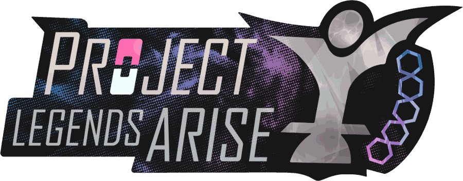
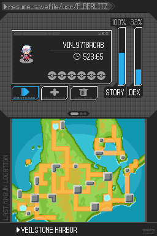
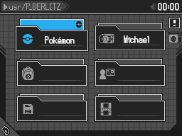
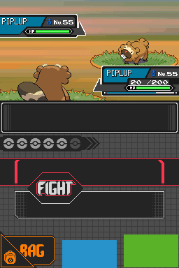
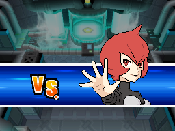

Legends Arise
- Type
- A Pokémon Platinum fan game, built on the original DS hardware
- Team
- AdAstra-LD ?
- Setting
- Sinnoh, around Veilstone City, linked to Legends: Arceus
- My part
- User interface and pixel art ?
- Years
- 2021 to 2024 ?
The project
Legends Arise is a fan game built on Pokémon Platinum, for the real Nintendo DS. You play Platinum Berlitz, sent to Sinnoh by her supervisor Fortis for the Legends Arise programme. The story opens on a cruise ship, the S.S. Minerva, and lands in Veilstone City: an industrial port with polluted channels, cargo ships and a company called Galaxias Novus that owns most of the containers.
The team documented the game in a wiki: mechanics, Pokémon, region, plot chapters and a glossary of lore.
QUESTION FOR OMARWhat was the team, and what's the status of the project now? I'd like the cover facts to be exact, including your role.
Two screens
The DS has two screens, and the interface uses both on purpose. The top screen is the save file, styled like a file path on a device: resume_savefile/usr/P_BERLITZ, with the trainer's ID, play time, badges, and two bars for STORY and DEX progress. The bottom screen is the map, with the last known location.

QUESTION FOR OMARIs the file-path look tied to the Calypsolens, the device Platinum carries? If the menus are the device itself, that's the metaphor to lead with.
The menu
The pause menu keeps the same device language: a header path, tiles for Pokémon, the trainer card, the bag, saving and settings.

Battle
The battle screen splits the same way: the scene on top, the commands below, with FIGHT in the middle and the party shown as a row of Poké Balls.

Important trainers get a VS cut-in with a portrait drawn for the DS.

QUESTION FOR OMARDid you draw the portraits and the battle UI, or design them for someone else to draw?
The world
Some of the systems designed for the game, from the wiki:
- Weather that changes every day. Each place belongs to a climate zone with a table of odds per season. A daily seed picks the weather, and autumn gets a new one of its own, Autumn Wind.
- Phenomena. Glints in the tall grass give Season Coins, dust clouds in caves give stones and gems, feather shadows give feathers, and wisps appear at night in the stranger places.
- The Miragescape, a dimension outside time where Pokémon from Legends: Arceus survived. The Forces of Nature start roaming Sinnoh once you've offered enough Season Coins at their pagodas.
- Madame Fourth, who sets up your save at the start. She's in a bad mood because the developers, whom she calls the Demiurges, gave her this job.
QUESTION FOR OMARWhich of these were yours? I'd rather the page only claims what you made.